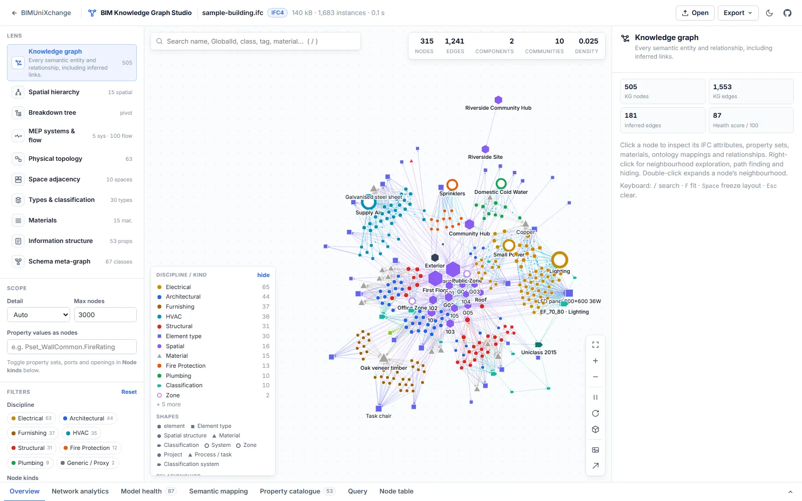
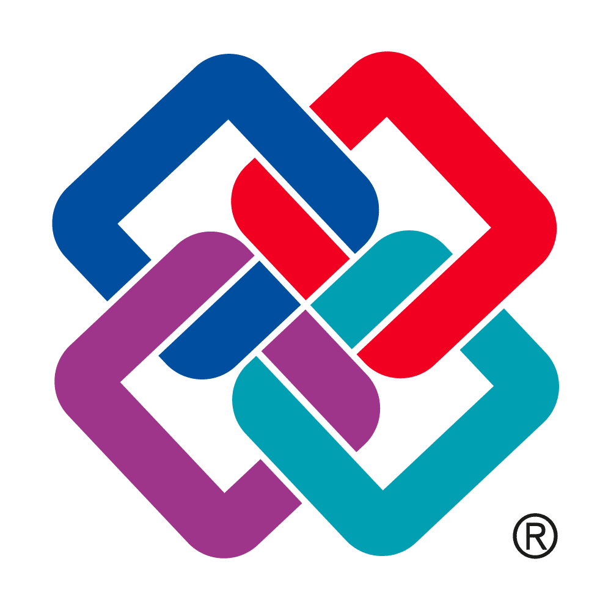
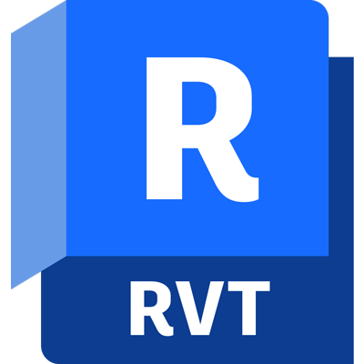
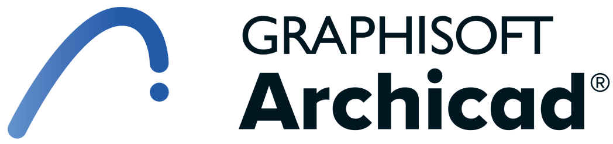

Fast, faithful IFC parsing
Streaming ISO 10303-21 indexer with lazy decoding. Geometry is never materialised — a 90 MB file indexes in about a second.
BIMUniXchange reads IFC models and Revit / ArchiCAD exports, turns every relationship into a typed, ontology-aligned edge, infers what the model only implies, and gives researchers and practitioners the tools to analyse, audit and export it.
Or explore a real Revit export · ArchiCAD export
Each lens projects the same semantic model onto the question you are asking — and every node opens an inspector with attributes, property sets, materials, ontology mappings and relationships.

From a robust STEP parser to network science and open exports, every step is transparent: edges keep their source relationship, and inferred facts state the rule that produced them.
Streaming ISO 10303-21 indexer with lazy decoding. Geometry is never materialised — a 90 MB file indexes in about a second.
Inferred hosting, port-to-port feeds, space adjacency and door / stair access, storey location, type-inherited properties.
Classes and relations mapped to ifcOWL, BOT and Brick; properties exported as LBD PROPS. Coverage is reported per class.
Degree, PageRank, betweenness, closeness, clustering, Louvain communities, modularity, diameter and shortest paths.
Access graphs from space boundaries with mean depth, relative asymmetry and integration — rooted at the exterior.
20 checks — GlobalIds, containment, typing, materials, Pset_*Common, classification, MEP topology — scored and explorable.
Property query builder with wildcards and numeric operators, a property catalogue with coverage statistics, colour by any property.
RDF Turtle, Neo4j Cypher, GraphML, JSON and CSV with metrics, publication-ready SVG, plus health and mapping reports.
Drop an .ifc, .ifczip or CSV. Nothing leaves the browser.
Every STEP instance is indexed by byte range; arguments decode on demand.
Objectified relationships become typed edges; psets, units and materials resolve.
Rules add hosting, flow, adjacency and discipline — each with provenance.
Lenses, metrics, queries and audits — then RDF, GraphML or Neo4j.
Open-standard IFC and the tabular exports produced by the BIMUniXchange Revit add-in and ArchiCAD scripts all map onto the same semantic model — so every lens, check and export works for each.



Take the graph wherever your work continues — triple stores, graph databases, network-analysis software or a paper figure.
BIMUniXchange started as an interoperability pipeline: export geometry and complete metadata from Revit or ArchiCAD, and bring both into Unity for XR — Quest 3, mobile and desktop VR.
Revit add-in that exports building geometry (OBJ) together with element metadata (CSV). Available on the Autodesk App Store.
Autodesk App Store ↗Scripts that assign unique IDs and extract ArchiCAD element metadata to the same tabular schema as the Revit exporter.
Scripts on GitHub ↗Imports geometry and metadata into Unity for interactive, metadata-rich XR review and 4D construction sequencing.
Releases ↗The project is MIT-licensed. If it supports academic research or industry projects, please cite it — and feel free to open an issue with feedback or results.
@software{isaddiq_BIMUniXchange_2025,
author = {Saddiq Ur Rehman},
title = {BIMUniXchange},
year = {2025},
publisher = {GitHub},
howpublished = {\url{https://github.com/isaddiq/BIMUniXchange}},
}
APA: isaddiq. (2025). BIMUniXchange [Computer software]. GitHub. https://github.com/isaddiq/BIMUniXchange
No installation, no account, no upload.